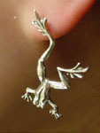
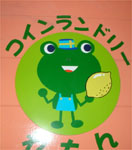
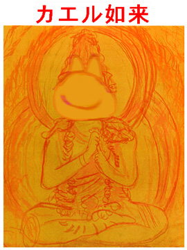
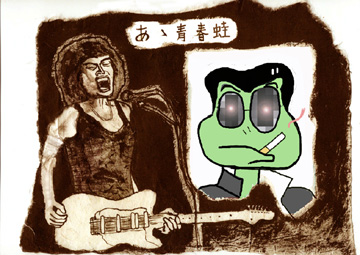

妖艶かえるピアス！ 【福岡発／濃艶主婦同志記者】ピアスって可愛いですよね。そのピアスにカエルバージョンがあるとしたら！もー。カエルピアスをしたその日から、みいんな、あたしにクーラクラです。ついでに、道行く人々の注目度も抜群です。足が長いのがおしゃれでしょ。
【全国かえる奉賛会】おー。なんと妖艶なカエルピアスなのであろうかあああ。かえる忘年会で同席していたカエル男性は全員、くらくらになり、薬院新川に転落しそうになりました。
闇夜にカエルコインランドリーに救われる！ 【福岡発げこげこ大王７世直筆】大王がバスを乗り過ごして、途方に暮れながら、深夜におやじ狩りの恐怖と戦いながら、孤独に歩いていたときのことです。
いずこからともなく、優しい視線を感じて、顔をあげてみたら。そこにカエルが微笑んでいるではありませんかあああ。
コインランドリーのマークとして、カエルがにっこり笑っていたのです。孤独な夜道にどれだけ励みになったことかあ。みなさんも、カエルに勇気をもらうことが多いと思うけど、大王は、このときほどカエルの御加護を感じたことはないぞお。ありがとおお。
すすむ画伯がカエル絵の新作！  【薩摩発すすむてつろう様】仕事に疲れた現代人のために、かえる如来を描いてみました。また、ああ青春カエルもあわせて描きました。【全国かえる奉賛会】すすむ画伯のカエル絵は、仕事に疲れた時に、癒されましたたああ。かえる如来は、小さく印刷して手帳に貼っておがんでおります。かえる絵はクリックするとでかくなります。
非カエル系新聞・朝日新聞千葉版に、「ブリキ製の『カエル君』大もて 市原市」という記事が写真付きで掲載されたでケロ！【千葉発／新聞業界で働く「ごま蛙」同志記者】敬愛する大王様いつも「かえる新聞」を楽しく読ませていただいております。 私、初めての投稿になりますが、新聞業界で働く「ごま蛙」と申す者です。11月５日付の非カエル系新聞・朝日新聞千葉版に、「ブリキ製の『カエル君』大もて 市原市」という記事が写真付きで掲載されましたので、ご報告します。 記事をかいつまんで説明いたしますと次のような内容です。 市原市の職員グループが職員提案制度の啓発に、と考えて作ったブリキ製のキャラクターバッジ「カエル君」が職員の間で大もてだ。バッジは「提案制度を親しみやすく、もっと身近にするために、イメージキャラクターを作ろう」と、制度を主管する行政改革推進室が考えた。カエルは「元気な市役所に『変える』」からとった。イラストは、情報管理課の女性職員が描き、子どものおもちゃのバッジ作りキットを買って、ブリキをプレスして作った。作業は、昼休みや仕事を終えた夜。職員２人が１個１個、コツコツと手作りした。 提案制度の強化月間が始まった８月初めに、「バッジを広めてくれそうな」市長や助役に付けてもらったところ、幹部職員らも「右にならえ」。職員の間では、透明なプラスチックの名札のホルダーに付けるのが流行だ。 一般の職員からも「ぜひひとつ」と注文が殺到しているが、行革推進室は「なにぶん自腹で２００個しか作らなかったので……」。バッジの効き目があったのか、職員からの提案は８月だけで９２１件。佐久間隆義市長は「すぐにでも実行したい、面白い提案がたくさんあった」と喜んでいる。 【全国かえる奉賛会】最近、サラリーマン稼業が忙しい大王がカエル新聞を更新しない間に、非かえる系一般紙が、かえる報道を展開していて、うらやましいぞおおお。
全国の地方公務員の諸君！市原市職員に習い、全力をあげて、かえるバッチを手作りしようではないかああああああ。町のマークとかにもカエルを使おうではないかあ。
|
メールマガジン登録
メールマガジン解除
Powered by


かえる古新聞過去に取り上げた記事を見出し付きで一覧したい人は、ここをクリック◆創刊号を見る◆先週号を見る◆話題の号を見る◆かえる新聞の昔を読む
|
私も入っています。。全国かえる奉賛会
大王様に会うには、このバナーをクリック。ずっと奥に写真館があるぞ。全国かえる奉賛会に入会するには、自分のホームページのどこかに、下の部分を追加するとバナーがリンク付きで表示されるぞ。どんどん入会しましょー |


|